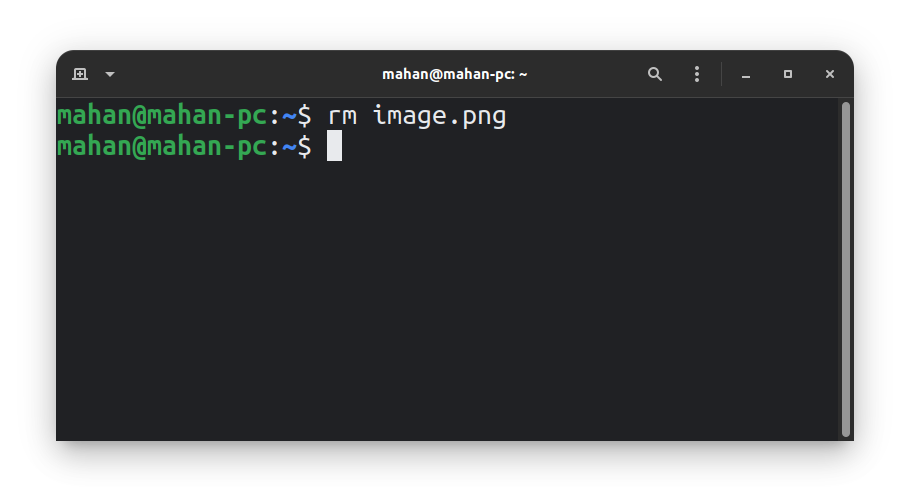

Linux commands are entered in the bellow form:
<command> <argument 1> <argument 2> ...
For example:
rm note.txt picture.png
In this example, the rm command is used along with 2 arguments, note.txt, and picture.png. rm command removes file(s). You can give it the file names as arguments. This example, will delete the 2 files, note.txt and picture.png
